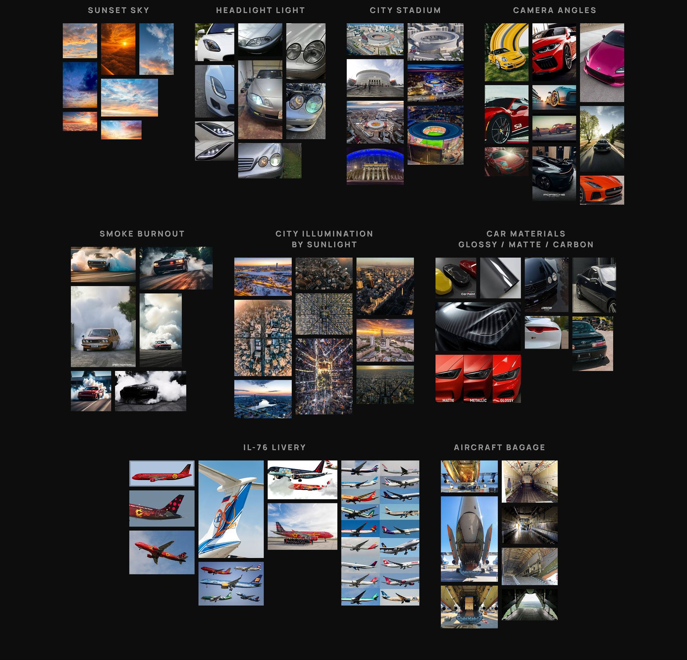
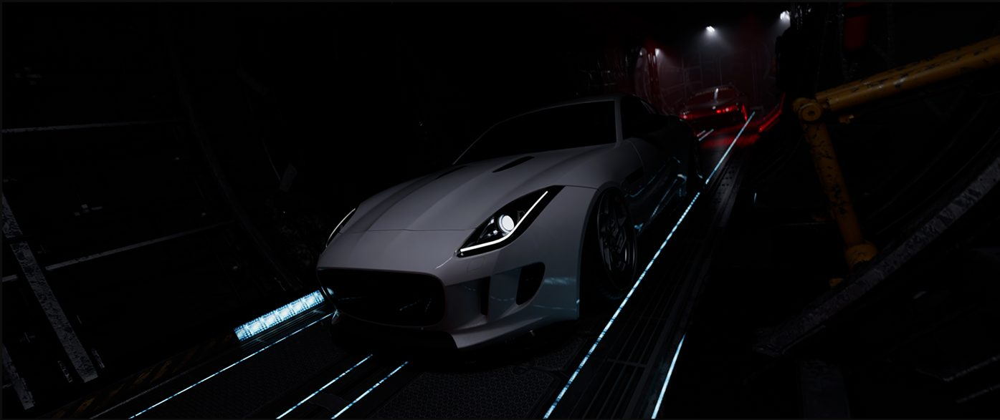
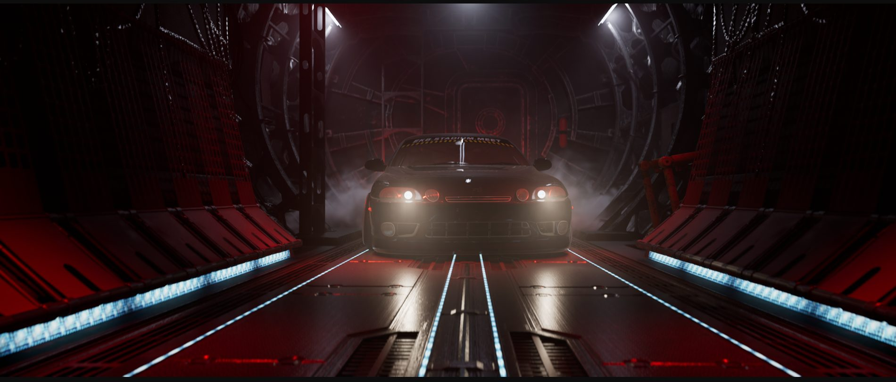
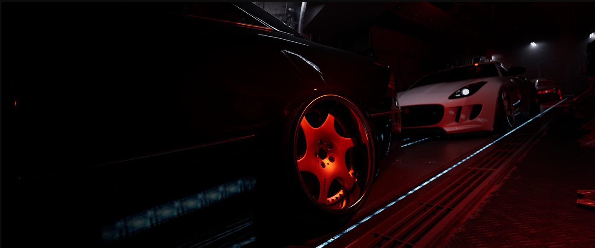

Sky Race — CGI Cinematic, Unreal Engine 5
How did it all begin
The inspiration
I was deeply inspired by complex projects that merge motion design, simulations, storytelling, and strong brand positioning. Exploring works on Behance, I realized that projects of this scale are almost exclusively created by full-service studios and large teams.
Меня всегда вдохновляли комплексные проекты, объединяющие 3D-анимацию, VFX-симуляции, сторителлинг и четкую концепцию. Листая Behance, я понимал, что за работами такого масштаба почти всегда стоят целые студии и большие команды.
The solo challenge
I set out to push my boundaries and step far out of my comfort zone by taking full creative and technical ownership of every single stage — completely solo.
Я решил выйти из зоны комфорта, принять этот вызов и пройти весь путь соло — взяв на себя полную ответственность за каждый этап производства.


Project goal
Spectacularly introduce the new event projects in a rugged, high-octane style to captivate the lowered car community
Ярко представить новые проекты мероприятия в дерзком, брутальном стиле, чтобы привлечь внимание фанатов заниженных авто
Place three cars into non-traditional settings beyond standard asphalt roads
Погрузить три автомобиля в нестандартные локации за пределами привычного городского асфальта
Create a full-fledged cinematic product that moves away from standard ad tropes and resonates with a younger audience
Создать полноценный кинопродукт без шаблонных рекламных штампов, понятный и близкий молодой аудитории
Challenges
Refine and elevate all vehicle shaders and materials, focusing on impeccably detailed custom builds
Усовершенствовать шейдеры и текстуры автомобилей с акцентом на детально проработанные кастомные проекты
Craft three unique locations to establish and drive the overall cinematic mood of the video
Создать три уникальные среды, передающие общую кинематографичную атмосферу видео
Build highly detailed 3D models based on real-world cars
Воссоздать подробные 3D-модели реально существующих автомобилей
Develop complex lighting setups to recreate dramatic dusk skies and the dimly lit interior of a cargo plane before drop
Настроить освещение, передающее вечернее небо и полумрак внутри грузового отсека перед сбросом
Simulate realistic tire smoke during high-speed acceleration and burnouts
Воссоздать реалистичную симуляцию дыма из-под колёс при дрифте и старте с места
Animate camera movements to mimic aerial shots, handheld camera work, plane-mounted rigs, and stabilized tracking
Занимировать движения камер, имитируя съемку с воздуха, с рук, с корпуса самолёта и динамический трекинг
Mood board


Modeling
Jaguar F-Type 2014
High-poly 3D modeling of the vehicle, custom 19” wheels, and exterior aero components by Maxton Design
High-poly 3D-моделирование кузова, кастомных 19-дюймовых дисков и элементов обвеса от Maxton Design

Toyota Soarer Z30
Full 3D car build featuring 19” Work CR2P wheels, Vertex body kit, Big Win front lip, and a Shotgun dual exhaust system
Детальное 3D-моделирование кузова, 19-дюймовых дисков Work CR2P, обвеса Vertex, передней губы Big Win и выхлопной системы Shotgun

Mercedes-Benz CL W215
Detailed 3D vehicle model with 19” Weds Kranze Bazreia wheels, Brabus front & rear lips, roof spoiler, and custom exhaust setup
3D-моделирование кузова, 19-дюймовых дисков Weds Kranze Bazreia, передней и задней накладок Brabus, спойлера на крышу и выхлопа

Main scenario
Scene 01
Shot 01: The camera pushes out from the clouds as a co-branded aircraft (auto.ru & ESM2026) streaks past, flying off toward the horizon
Кадр 01: Камера вылетает из облаков, навстречу ей проносится брендированный самолёт (auto.ru & ESM2026) и уходит за горизонт
Scene 02.1
Shot 01-07: A sequence of slow, orbiting camera moves showcasing key details of Cars 1 and 2 — highlighting custom wheels, headlights, and trunk badging. Pulsating red alarm lights inside the flight deck reveal textures and design elements, while subtle camera shake maintains the tension of an airborne cargo hold
Кадр 01-07: Серия плавных облётов камеры, демонстрирующая ключевые элементы Автомобилей 1 и 2 — с акцентом на кастомные диски, оптику и фирменные шильдики. Пульсирующий красный свет тревоги внутри отсека проявляет фактуру и детали дизайна, а легкая вибрация камеры передает напряженную атмосферу полета
Scene 02.2
Shot 08-13: Car 3 fires up and locks into an aggressive burnout as studio lights reveal the vehicle amidst heavy camera vibration. Dramatic sunlight breaks into the cargo hold as the hatch swings open, setting the scene for the high-speed deployment. Dynamic, cinematic shots track Cars 1, 2, and 3 as they speed down the ramp and plunge out of the aircraft into free fall
Кадр 08: Автомобиль 3 резко включается в кадр и пускается в агрессивный бёрнаут под вспышки света и жесткую вибрацию камеры. Яркий солнечный свет врывается в полумрак грузового отсека через открывающийся люк, знаменуя кульминацию сцены. Динамичные операторские ракурсы фиксируют выезд всех трех автомобилей из отсека и их стремительный вылет из самолета в свободное падение
Scene 03
Shot 01: Cars 1, 2, and 3 plummet through the air toward the Ekaterinburg Arena stadium centered below, against the city skyline. Branded parachutes deploy. The camera tumbles along its axis, diving straight down with intense shake
Кадр 01: Все три автомобиля падают в сторону стадиона «Екатеринбург Арена» на фоне панорамы города. Раскрываются брендированные парашюты. Камера вращается вокруг своей оси и стремительно падает вниз с эффектом сильной тряски
Blocking
Problems encountered and solved
Problem №1
While working on the burnout shot for the Toyota Soarer, I struggled to achieve realistic tire smoke using Unreal Engine's Niagara system. The visual quality and density just didn't meet cinematic standards
Во время работы над шотом с бёрнаутом Toyota Soarer я столкнулся с проблемой симуляции дыма из-под колёс. Изначальные тесты в Niagara (Unreal Engine) не давали нужного качества и плотности.
Solution
I shifted the smoke generation to EmberGen. After multiple iterations and tweaking the fluid dynamics, I successfully achieved the high-quality, dense smoke simulation required for the shot
Я перенёс симуляцию в EmberGen. После серии тестов и настройки флюидов удалось добиться нужной реалистичности и высокого качества дыма
Problem №2
I wanted to accurately recreate realistic contrails (condensation trails) streaking behind the airplane as it cuts through the sky
Я поставил задачу реалистично воссоздать белые конденсационные следы, тянущиеся за самолётом в небе
Solution
I successfully generated and fine-tuned the atmospheric jet trails using Unreal Engine's Niagara particle system
Эффект удалось воссоздать и настроить с помощью системы частиц Niagara в Unreal Engine
Problem №3
Creating realistic volumetric clouds in the sky scene resulted in severe performance drops and heavy scene weight when using VDB volumes throughout
Создание реалистичных объёмных облаков в небесной сцене с помощью VDB-ассетов сделало проект слишком тяжелым и ресурсоёмким
Solution
To optimize rendering without sacrificing visual quality, I used high-detail VDB clouds exclusively for the foreground and direct camera views, while using Ultra Dynamic Sky volumetrics to efficiently fill the background
Для оптимизации сцены без потери качества я оставил детальные VDB-облака только на переднем плане и в прямой видимости камеры, а остальное пространство заполнил объёмными облаками из Ultra Dynamic Sky
Stills


Thanks for watching
Thank you for scrolling through! If you enjoyed this project, I'd love to hear your thoughts — and if you have a project of your own in mind, let's talk.
Спасибо за внимание к проекту! Если у вас есть идея своего ролика — напишите, обсудим.